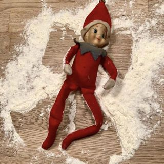
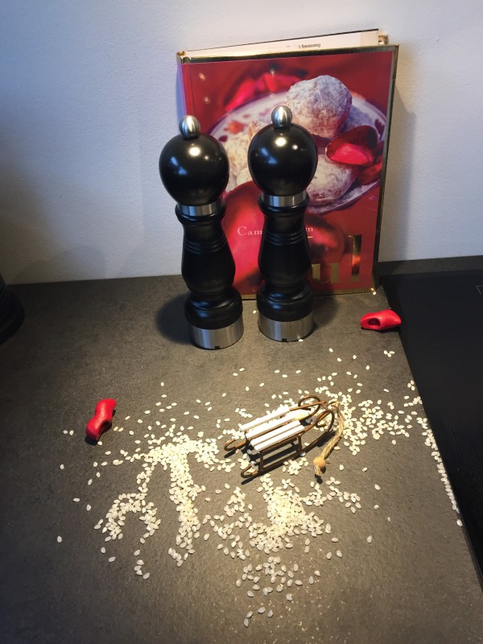
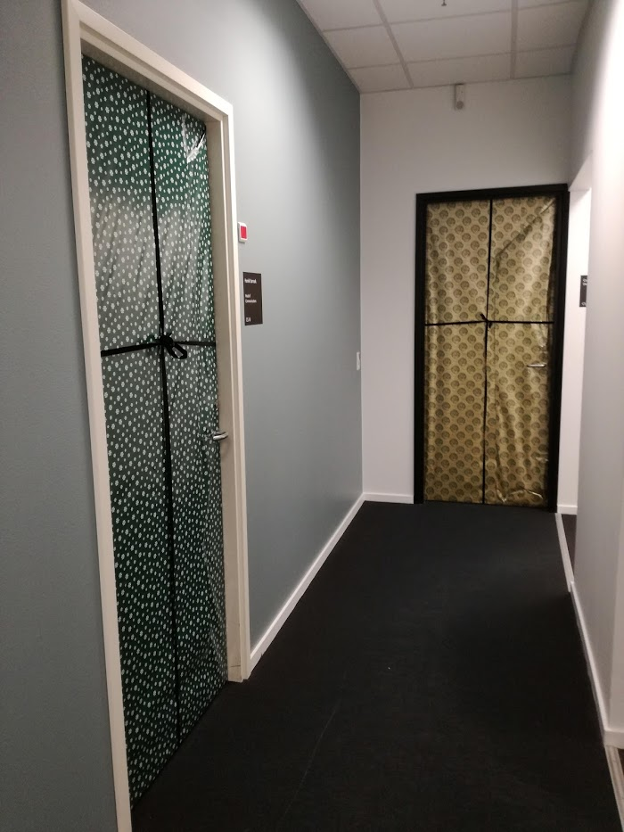
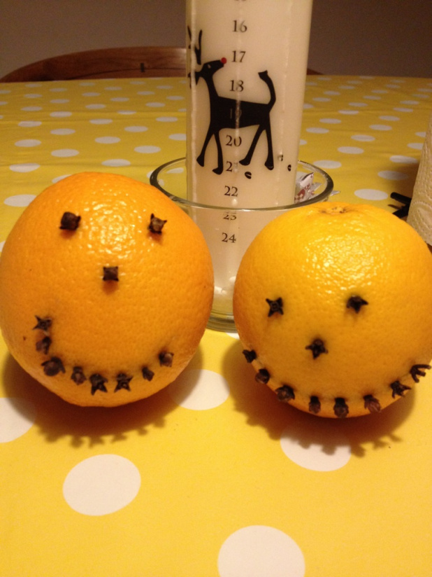
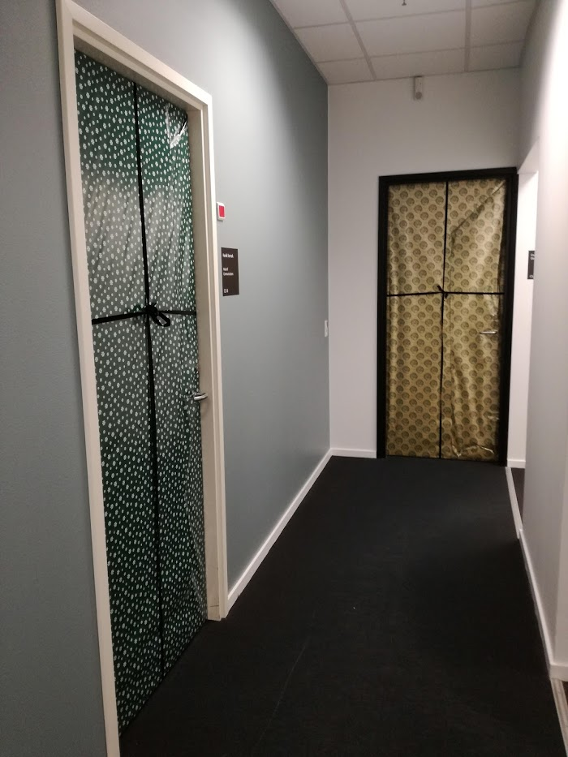
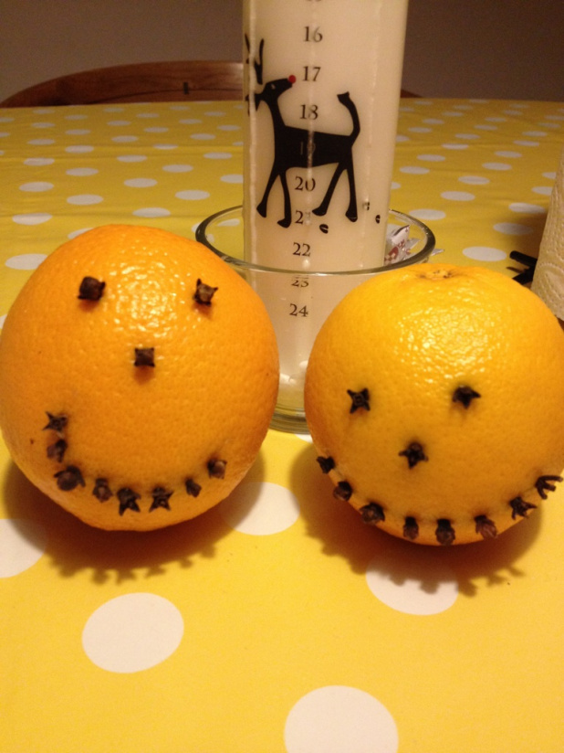
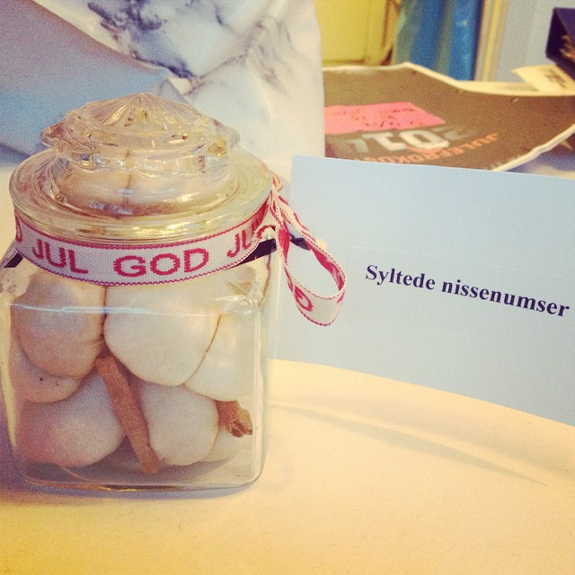
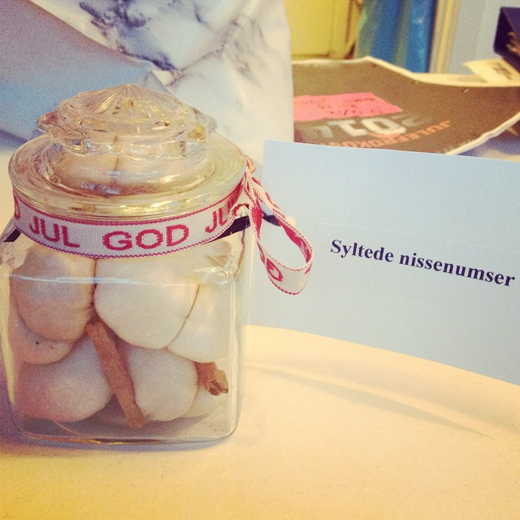

I december er der mange steder tradition for at man har hemmelige nissevenner som forsøder julemåneden, men somme tider kan nisser også være drilske, hvilket kræver noget fantasi fra en sådan nisseven.
Hvis du mangler inspiration til nisserierne, så har jeg herunder nogle forslag til dig som ingen vil blive ked af, medmindre man overdriver det.
God fornøjelse med løjerne!
Sjove forslag til din nisseven
- Du kan købe et sjovt juleslips eller lignende, og så give ham/hende det, og skrive en seddel med at han skal have det på hele dagen, ellers er der ingen julegodter.
- små sedler med små søde beskeder lagt steder hvor han/hun vil finde dem ved et tilfælde sammen med appelsiner eller marcipanbrød, en lækker nissehue, hjemmebagte julekager, en lille juledekoration eller andet julesjov.
- Lav en skattejagt med hints til hvor der ligger en pakke og venter.
- Dekorere skrivebordet med guirlander, lyskæde eller andet sjovt.
- Skriv et opslag for vedkommende i stil med dette:
Jeg vil så gerne være rigtig nisse, men jeg har ingen træsko.
Hvis du har træsko du ikke bruger, eller træskostøvler, eller måske bare andre gamle sko - uanset størrelse, så stil dem ved mit bord, jeg vil blive SÅ glad.
"X" - Put ris i sølvpapir og bind fint bånd omkring
- Pak en sød gave ind i maaaange lag gavepapir - eller avispapir for at spare på ressourcerne ;)
- Anonyme breve, gerne lavet af bogstaver klippet ud fra aviser, med en nissedjævel og teksten "Muhaha, bare vent!".
- Tag et papkrus, skær bunden ud, put en sløjfe om, stil den på hendes/hans bord og fyld det med runde chokolader eller andet der kan trille. Så kan hun/han kravle rundt og samle op.
- Denne historie er også sjov:
Den der med autotekst i Word er virkelig et hit, især hvis det går ud over en meget seriøs lærer, som (ganske afslørende) ikke læste opgaveformuleringen igennem inden der blev trykket "print" og uddelt til stor morskab for klassen ;D
Det var "der, skal, som, og" der var blevet byttet ud med "juletræ, nissehue, pakkeleg, pebernød" - kan I forestille jer hvordan vi grinede over en opgaveformulering i økonomi?
Inspirationsgalleri


 



 
